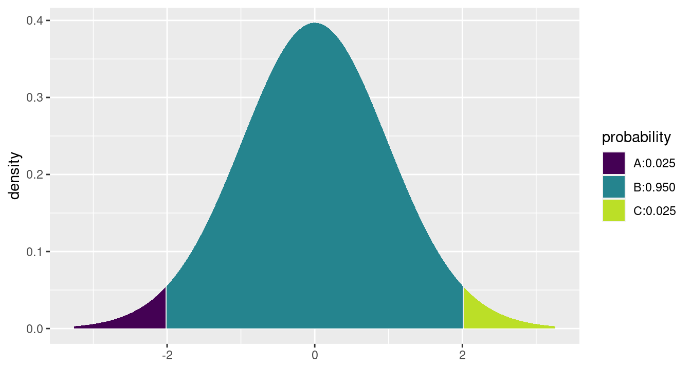

C Algorithmic thinking
C.1 Introduction
Algorithmic thinking can be defined as a set of abilities that are related to constructing and understanding algorithms (Futschek 2006):
- the ability to analyze a given problem
- the ability to precisely specify a problem
- the ability to find the basic actions that are adequate to solve a problem
- the ability to construct a correct algorithm to a given problem using basic actions
- the ability to think about all possible special and normal cases of a problem
- the ability to improve the efficiency of an algorithm
These important capacities are a necessary but not sufficient component of “computational thinking” and data science.
It is critical that data scientists have the skills to break problems down and code solutions in a flexible and powerful computing environment using functions. We focus on the use of R for this task (although other environments such as Python have many adherents and virtues). In this appendix, we presume a basic background in R to the level of Appendix B.
C.2 Simple example
We begin with an example that creates a simple function to complete a statistical task (calculate a confidence interval for an estimate).
In R, a new function is defined by the syntax shown below, using the keyword function.
This creates a new object in R called new_function() in the workspace that takes two arguments (argument1 and argument2).
The body is made up of a series of commands (or expressions), typically separated by line breaks and enclosed in curly braces.
library(tidyverse)
library(mdsr)
new_function <- function(argument1, argument2) {
R expression
another R expression
}Here, we create a function to calculate the estimated confidence interval (CI) for a mean,
using the formula \(\bar{X} \pm t^* s / \sqrt{n}\), where \(t^*\) is the appropriate t-value
for that particular confidence level.
As an example, for a 95% interval with 50 degrees
of freedom (equivalent to \(n=51\) observations) the appropriate value of \(t^*\) can be calculated using the cdist() function from the mosaic package.
This computes the quantiles of the t-distribution between which 95% of the distribution lies.
A graphical illustration is shown in Figure C.1.
library(mosaic)
mosaic::cdist(dist = "t", p = 0.95, df = 50)[1] -2.01 2.01mosaic::xqt(p = c(0.025, 0.975), df = 50)
Figure C.1: Illustration of the location of the critical value for a 95% confidence interval for a mean. The critical value of 2.01 corresponds to the location in the t-distribution with 50 degrees of freedom, for which 2.5% of the distribution lies above it.
[1] -2.01 2.01We see that the value is slightly larger than 2. Note that since by construction our confidence interval will be centered around the mean, we want the critical value that corresponds to having 95% of the distribution in the middle.
We will write a function to compute a t-based confidence interval for a mean from scratch.
We’ll call this function ci_calc(), and it will take a numeric vector x as its first argument, and an optional second argument alpha, which will have a default value of 0.95.
# calculate a t confidence interval for a mean
ci_calc <- function(x, alpha = 0.95) {
samp_size <- length(x)
t_star <- qt(1 - ((1 - alpha)/2), df = samp_size - 1)
my_mean <- mean(x)
my_sd <- sd(x)
se <- my_sd/sqrt(samp_size)
me <- t_star * se
return(
list(
ci_vals = c(my_mean - me, my_mean + me),
alpha = alpha
)
)
}
Here the appropriate quantile of the t-distribution is calculated using the qt() function, and the appropriate confidence interval is calculated and returned as a list.
In this example, we explicitly return() a list of values.
If no return statement is provided, the result of the last expression
evaluation is returned by default.
The tidyverse style guide (see Section 6.3) encourages that default, but we prefer to make the return explicit.
The function has been stored in the object ci_calc().
Once created, it
can be used like any other built-in function.
For example, the expression below will print the CI and confidence level for the object x1 (a set of 100 random normal variables with mean 0 and standard deviation 1).
x1 <- rnorm(100, mean = 0, sd = 1)
ci_calc(x1)$ci_vals
[1] -0.0867 0.2933
$alpha
[1] 0.95The order of arguments in R matters if arguments to a function are not named.
When a function is called, the arguments are assumed to correspond to the order of the arguments as the function is defined.
To see that order, check the documentation, use the args() function, or look at the code of the function itself.
?ci_calc # won't work because we haven't written any documentation
args(ci_calc)
ci_calcConsider creating an R package for commonly used functions that you develop so that they can be more easily documented, tested, and reused.
Since we provided only one unnamed argument (x1), R passed the value x1 to the argument x of ci_calc().
Since we did not specify a value for the alpha argument, the default value of 0.95 was used.
User-defined functions nest just as pre-existing functions do.
The expression below will return the CI and report that the confidence limit is 0.9 for 100 normal random variates.
ci_calc(rnorm(100), 0.9) To change the confidence level, we need only change the alpha option by specifying it as a named argument.
ci_calc(x1, alpha = 0.90)$ci_vals
[1] -0.0557 0.2623
$alpha
[1] 0.9The output is equivalent to running the command ci_calc(x1, 0.90) with two unnamed arguments, where the arguments are matched in order.
Perhaps less intuitive but equivalent would be the following call.
ci_calc(alpha = 0.90, x = x1)$ci_vals
[1] -0.0557 0.2623
$alpha
[1] 0.9The key take-home message is that the order of arguments is not important if all of the arguments are named.
Using the pipe operator introduced in Chapter 4 can avoid nesting.
rnorm(100, mean = 0, sd = 1) %>%
ci_calc(alpha = 0.9)$ci_vals
[1] -0.0175 0.2741
$alpha
[1] 0.9The testthat package can help to improve your functions by writing testing routines to check that the function does what you expect it to.
C.4 Non-standard evaluation
When evaluating expressions, R searches for objects in an environment. The most general environment is the global environment, the contents of which are displayed in the environment tab in RStudio or through the ls() command. When you try to access an object that cannot be found in the global environment, you get an error.
We will use a subset of the NHANES data frame from the NHANES package to illustrate a few of these subtleties. This data frame has a variety of data types.
library(NHANES)
nhanes_small <- NHANES %>%
select(ID, SurveyYr, Gender, Age, AgeMonths, Race1, Poverty)
glimpse(nhanes_small)Rows: 10,000
Columns: 7
$ ID <int> 51624, 51624, 51624, 51625, 51630, 51638, 51646, 51647, …
$ SurveyYr <fct> 2009_10, 2009_10, 2009_10, 2009_10, 2009_10, 2009_10, 20…
$ Gender <fct> male, male, male, male, female, male, male, female, fema…
$ Age <int> 34, 34, 34, 4, 49, 9, 8, 45, 45, 45, 66, 58, 54, 10, 58,…
$ AgeMonths <int> 409, 409, 409, 49, 596, 115, 101, 541, 541, 541, 795, 70…
$ Race1 <fct> White, White, White, Other, White, White, White, White, …
$ Poverty <dbl> 1.36, 1.36, 1.36, 1.07, 1.91, 1.84, 2.33, 5.00, 5.00, 5.…
Consider the differences between trying to access the ID variable each of the three ways shown below. In the first case, we are simply creating a character vector of length one that contains the single string ID. The second command causes R to search the global environment for an object called ID—which does not exist. In the third command, we correctly access the ID variable within the nhanes_small data frame, which is accessible in the global environment. These are different examples of how R uses scoping to identify objects.
"ID" # string variable[1] "ID"ID # generates an errorError in eval(expr, envir, enclos): object 'ID' not foundnhanes_small %>%
pull(ID) %>% # access within a data frame
summary() Min. 1st Qu. Median Mean 3rd Qu. Max.
51624 56904 62160 61945 67039 71915
How might this be relevant?
Notice that several of the variables in nhanes_small are factors. We might want to convert each of them to type character. Typically, we would do this using the mutate() command that we introduced in Chapter 4.
nhanes_small %>%
mutate(SurveyYr = as.character(SurveyYr)) %>%
select(ID, SurveyYr) %>%
glimpse()Rows: 10,000
Columns: 2
$ ID <int> 51624, 51624, 51624, 51625, 51630, 51638, 51646, 51647, 5…
$ SurveyYr <chr> "2009_10", "2009_10", "2009_10", "2009_10", "2009_10", "2…
Note however, that in this construction we have to know the name of the variable we wish to convert (i.e., SurveyYr) and list it explicitly. This is unfortunate if the goal is to automate
our data wrangling (see Chapter 7).
If we tried instead to set the name of the column (i.e., SurveyYr) to a variable (i.e., varname) and use that variable to change the names, it would not work as intended.
In this case, rather than changing the data type of SurveyYr, we have created a new variable called varname that is a character vector of the values SurveyYr.
varname <- "SurveyYr"
nhanes_small %>%
mutate(varname = as.character(varname)) %>%
select(ID, SurveyYr, varname) %>%
glimpse()Rows: 10,000
Columns: 3
$ ID <int> 51624, 51624, 51624, 51625, 51630, 51638, 51646, 51647, 5…
$ SurveyYr <fct> 2009_10, 2009_10, 2009_10, 2009_10, 2009_10, 2009_10, 200…
$ varname <chr> "SurveyYr", "SurveyYr", "SurveyYr", "SurveyYr", "SurveyYr…
This behavior is a consequence of a feature of the R language called non-standard evaluation (NSE). The rlang package provides a principled way to work with expressions in the tidyverse and is used extensively in the dplyr package.
The dplyr functions use a form of non-standard evaluation called tidy evaluation.
Tidy evaluation allows R to locate SurveyYr, even though there is no object called SurveyYr in the global environment. Here, mutate() knows to look for SurveyYr within the nhanes_small data frame.
In this case, we can solve our problem using the across() and where() adverbs and mutate().
Namely, we can use is.factor() in conjunction with across() to find all of the variables that are factors and convert them to character using as.character().
nhanes_small %>%
mutate(across(where(is.factor), as.character))# A tibble: 10,000 × 7
ID SurveyYr Gender Age AgeMonths Race1 Poverty
<int> <chr> <chr> <int> <int> <chr> <dbl>
1 51624 2009_10 male 34 409 White 1.36
2 51624 2009_10 male 34 409 White 1.36
3 51624 2009_10 male 34 409 White 1.36
4 51625 2009_10 male 4 49 Other 1.07
5 51630 2009_10 female 49 596 White 1.91
6 51638 2009_10 male 9 115 White 1.84
7 51646 2009_10 male 8 101 White 2.33
8 51647 2009_10 female 45 541 White 5
9 51647 2009_10 female 45 541 White 5
10 51647 2009_10 female 45 541 White 5
# … with 9,990 more rowsWhen you come to a problem that involves programming with tidyverse functions that you aren’t sure how to solve, consider these approaches:
- Use
across()and/orwhere(): This approach is outlined above and in Section 7.2. If this suffices, it will usually be the cleanest solution. - Pass the dots: Sometimes, you can avoid having to hard-code variable names by passing the dots through your function to another tidyverse function. For example, you might allow your function to take an arbitrary list of arguments that are passed directly to
select()orfilter(). - Use tidy evaluation: A full discussion of this is beyond the scope of this book, but we provide pointers to more material in Section C.6.
- Use base R syntax: If you are comfortable working in this dialect, the code can be relatively simple, but it has two obstacles for tidyverse learners: 1) the use of selectors like
[[may be jarring and break pipelines; and 2) the quotation marks around variable names can get cumbersome. We show a simple example below.
A base R implementation
In base R, you can do this:
var_to_char_base <- function(data, varname) {
data[[varname]] <- as.character(data[[varname]])
data
}
var_to_char_base(nhanes_small, "SurveyYr")# A tibble: 10,000 × 7
ID SurveyYr Gender Age AgeMonths Race1 Poverty
<int> <chr> <fct> <int> <int> <fct> <dbl>
1 51624 2009_10 male 34 409 White 1.36
2 51624 2009_10 male 34 409 White 1.36
3 51624 2009_10 male 34 409 White 1.36
4 51625 2009_10 male 4 49 Other 1.07
5 51630 2009_10 female 49 596 White 1.91
6 51638 2009_10 male 9 115 White 1.84
7 51646 2009_10 male 8 101 White 2.33
8 51647 2009_10 female 45 541 White 5
9 51647 2009_10 female 45 541 White 5
10 51647 2009_10 female 45 541 White 5
# … with 9,990 more rowsNote that the variable names have quotes when they are put into the function.
C.5 Debugging and defensive coding
It can be challenging to identify issues and problems with code that is not working.
Both R and RStudio include support for debugging functions and code.
Calling the browser() function
in the body of a function will cause execution to stop and set up an R interpreter.
Once at the browser prompt, the analyst
can enter either commands (such as c to continue execution, f to finish execution of the current function,
n to evaluate the next statement (without stepping into function calls), s to evaluate the next statement
(stepping into function calls), Q to exit the browser, or help to print this list.
Other commands entered
at the browser are interpreted as R expressions to be evaluated (the function ls() lists available objects).
Calls to the browser can be set using the debug() or debugonce() functions (and turned off using the undebug() function).
RStudio includes a debugging mode that is displayed when debug() is called.
Adopting defensive coding techniques is always recommended: They tend to identify problems early and minimize errors.
The try() function can be used to evaluate an
expression while allowing for error recovery.
The stop() function can be used to stop evaluation of the current
expression and execute an error action (typically displaying an error message).
More flexible testing is available in the assertthat package.
Let’s revisit the ci_calc() function we defined to calculate a confidence interval. How might we make this more robust?
We can begin by confirming that the calling arguments are sensible.
library(assertthat)
# calculate a t confidence interval for a mean
ci_calc <- function(x, alpha = 0.95) {
if (length(x) < 2) {
stop("Need to provide a vector of length at least 2.\n")
}
if (alpha < 0 | alpha > 1) {
stop("alpha must be between 0 and 1.\n")
}
assert_that(is.numeric(x))
samp_size <- length(x)
t_star <- qt(1 - ((1 - alpha)/2), df = samp_size - 1)
my_mean <- mean(x)
my_sd <- sd(x)
se <- my_sd / sqrt(samp_size)
me <- t_star * se
return(list(ci_vals = c(my_mean - me, my_mean + me),
alpha = alpha))
}
ci_calc(1) # will generate errorError in ci_calc(1): Need to provide a vector of length at least 2.ci_calc(1:3, alpha = -1) # will generate errorError in ci_calc(1:3, alpha = -1): alpha must be between 0 and 1.ci_calc(c("hello", "goodbye")) # will generate errorError: x is not a numeric or integer vectorC.6 Further resources
More examples of functions can be found in Chapter 13. The American Statistical Association’s Guidelines for Undergraduate Programs in Statistics American Statistical Association Undergraduate Guidelines Workgroup (2014) stress the importance of algorithmic thinking (see also Deborah Nolan and Temple Lang (2010)). Rizzo (2019) and H. Wickham (2019) provide useful reviews of statistical computing. A variety of online resources are available to describe how to create R packages and to deploy them on GitHub (see for example http://kbroman.org/pkg_primer). Hadley Wickham (2015) is a comprehensive and accessible guide to writing R packages. The testthat package is helpful in structuring more extensive unit tests for functions. The dplyr package documentation includes a vignette detailing its use of the lazyeval package for performing non-standard evaluation. Henry (2020) explains the most recent developments surrounding tidy evaluation.
H. Wickham (2019) includes a fuller discussion of passing the dots.
C.7 Exercises
Problem 1 (Easy): Consider the following function definition, and subsequent call of that function.
library(tidyverse)
summarize_species <- function(pattern = "Human") {
x <- starwars %>%
filter(species == pattern) %>%
summarize(
num_people = n(),
avg_height = mean(height, na.rm = TRUE)
)
}
summarize_species("Wookiee")
xError in eval(expr, envir, enclos): object 'x' not foundWhat causes this error?
Problem 2 (Medium): Write a function called count_name that, when given a name as an argument, returns the total number of births by year from the babynames data frame in the babynames package that match that name. The function should return one row per year that matches (and generate an error message if there are no matches).
Run the function once with the argument Ezekiel and once with Ezze.
Problem 3 (Medium):
Write a function called
count_nathat, when given a vector as an argument, will count the number ofNA'sin that vector.
Count the number of missing values in theSEXRISKvariable in theHELPfulldata frame in themosaicDatapackage.Apply
count_nato the columns of theTeamsdata frame from theLahmanpackage. How many of the columns have missing data?
Problem 4 (Medium): Write a function called map_negative that takes as arguments a data frame and the
name of a variable and returns that data frame with the negative values of the variable
replaced by zeroes. Apply this function the cyl variable in the mtcars data set.
Problem 5 (Medium): Write a function called grab_name that, when given a name and a year as an argument, returns the rows from the babynames data frame in the babynames package that match that name for that year (and returns an error if that name and year combination does not match any rows).
Run the function once with the arguments Ezekiel and 1883 and once with Ezekiel and 1983.
Problem 6 (Medium): Write a function called prop_cancel that takes as arguments a month number
and destination airport and returns the proportion of flights missing arrival delay for each day to that destination.
Apply this function to the nycflights13 package for February and Atlanta airport ATL and again with an invalid month number.
Problem 7 (Medium): Write a function called cum_min() that, when given a vector as an
argument, returns the cumulative minimum of that vector. Compare the result of your function
to the built-in cummin() function for the vector c(4, 7, 9, -2, 12).
Problem 8 (Hard): Benford’s law concerns the frequency distribution of leading digits from numerical data.
Write a function that takes a vector of numbers and returns the empirical distribution
of the first digit. Apply this function to data from the corporate.payment data set in the benford.analysis package.
C.8 Supplementary exercises
Available at https://mdsr-book.github.io/mdsr2e/ch-algorithmic.html#algorithmic-online-exercises
Problem 1 (Easy): Consider the following function definition, and subsequent call of that function.
library(tidyverse)
summarize_species <- function(data, pattern = "Human") {
data %>%
filter(species == pattern) %>%
summarize(
num_people = n(),
avg_height = mean(height, na.rm = TRUE)
)
}
summarize_species("Wookiee", starwars)Error in UseMethod("filter"): no applicable method for 'filter' applied to an object of class "character"How could we modify the call to the function to make this work?
Problem 2 (Easy): Consider the following function definition, and subsequent call of that function.
library(tidyverse)
summarize_species <- function(data, pattern = "Human") {
data %>%
filter(species == pattern) %>%
summarize(
num_people = n(),
avg_height = mean(height, na.rm = TRUE)
)
}
summarize_species("Wookiee")What errors are there in this function definition and call?
Problem 3 (Medium):
Write a function called
group_consecutive()that takes a vector of integers as input and returns a character string where the integers are sorted and consecutive values are listed with a-and other values separated by commas.Use the function and the
Lahmanpackage to concisely list which seasons where Jim Bouton (author of Ball Four) played major league baseball.